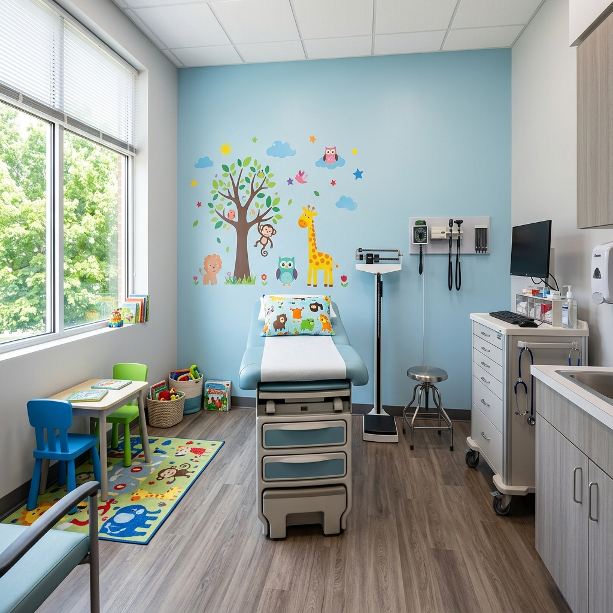
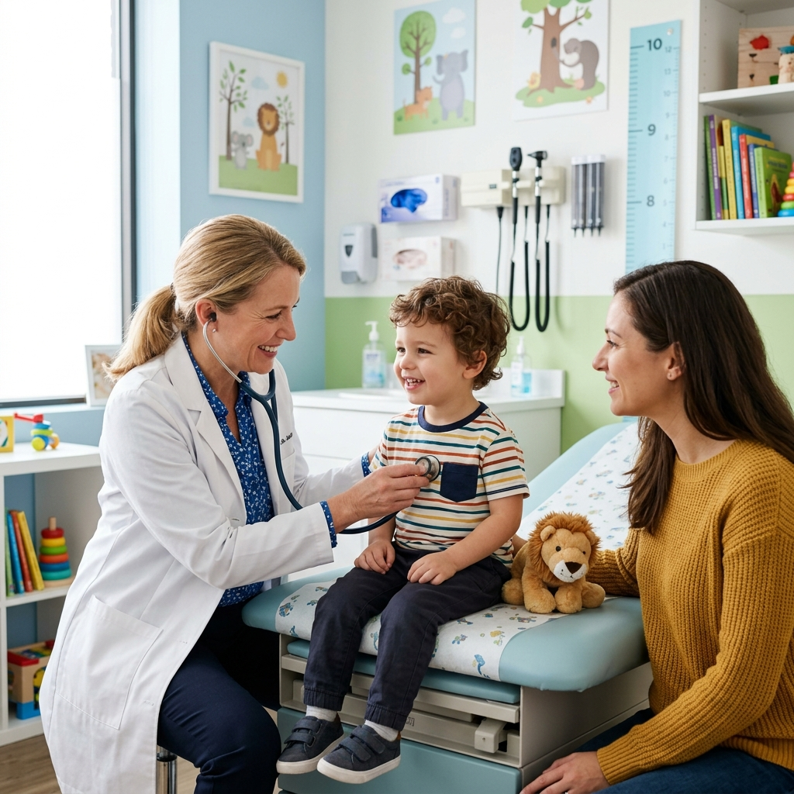
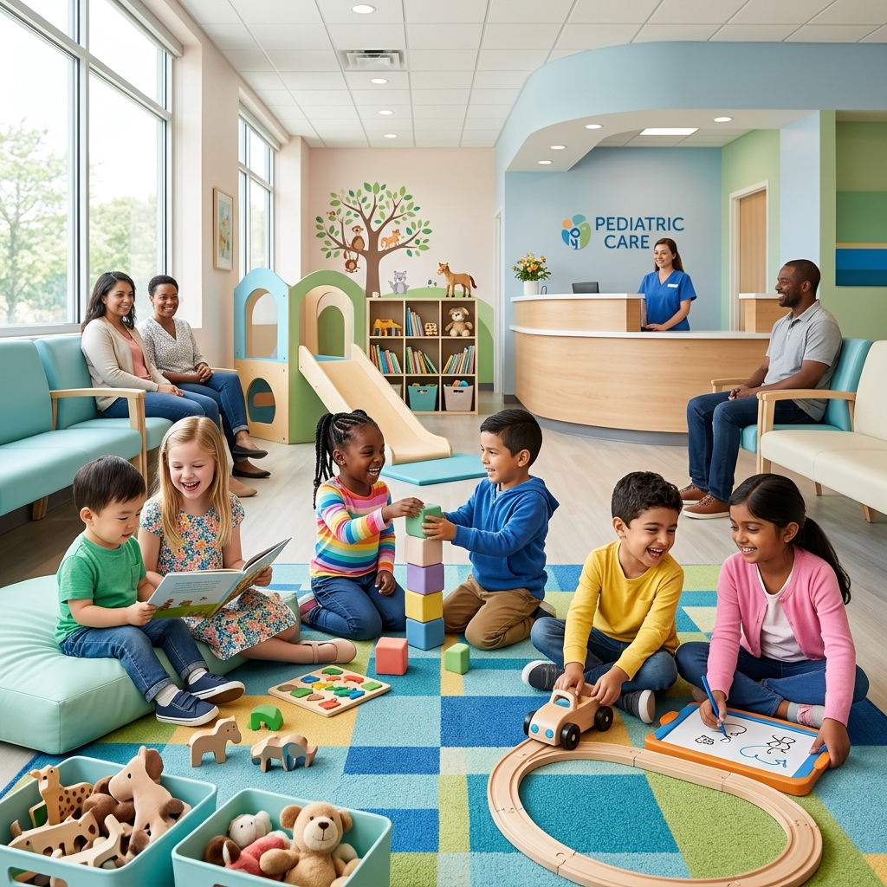

Pédiatre spécialiste à Fès, dédiée à la santé et au bien-être de vos enfants. Un accompagnement médical de qualité dans un environnement bienveillant et moderne.
La Professeure Mariam Erradi est une pédiatre reconnue à Fès, titulaire d'un doctorat en médecine et spécialisée en pédiatrie. Avec plus de 10 ans d'expérience, elle offre un suivi médical personnalisé et attentif à chaque enfant, du nouveau-né à l'adolescent.
Sa mission : accompagner les familles avec expertise, bienveillance et écoute, dans un cadre médical moderne et rassurant. Chaque consultation est une opportunité de veiller au développement harmonieux de votre enfant.
Des soins pédiatriques complets et adaptés à chaque étape de la vie de votre enfant
Examens cliniques complets, diagnostic et traitement des maladies infantiles. Un suivi médical rigoureux adapté à l'âge et aux besoins de chaque enfant.
Programme de vaccination conforme au calendrier national marocain. Suivi rigoureux et rappels pour protéger votre enfant des maladies évitables.
Suivi de la taille, du poids et du développement psychomoteur. Courbes de croissance personnalisées et détection précoce des anomalies.
Guidance alimentaire adaptée à chaque tranche d'âge, de l'allaitement à l'alimentation diversifiée. Prévention de l'obésité et des carences.
Bilans de santé réguliers, dépistage des troubles du développement, conseils d'hygiène et de prévention pour un développement optimal.
Un environnement moderne, accueillant et adapté aux enfants


Retrouvez les réponses aux questions les plus posées par les parents
N'hésitez pas à nous contacter pour prendre rendez-vous ou pour toute question
Notre cabinet vous accueille dans un cadre chaleureux et professionnel. N'hésitez pas à nous contacter pour prendre rendez-vous.
Vous serez redirigé vers WhatsApp pour envoyer le message